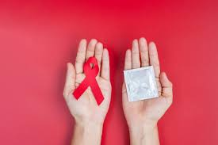

Salud es amor propio
Las Infecciones de Transmisión Sexual (ITS) son más comunes de lo que crees y muchas no presentan síntomas visibles. Hablar de ello con tu pareja no debe dar vergüenza, es un acto de madurez.
✅ Mitos vs Realidad
- Mito: "Si se ve limpio/a, no tiene nada".
Realidad: Muchas ITS son asintomáticas. Solo los análisis clínicos lo confirman.
- Mito: "La píldora anticonceptiva protege de todo".
Realidad: La píldora solo previene embarazos. Solo el condón previene ITS.
Recurso: Acude a tu Centro de Salud más cercano. Las pruebas rápidas de VIH y Sífilis suelen ser gratuitas y confidenciales.
⬅ Regresar al Inicio